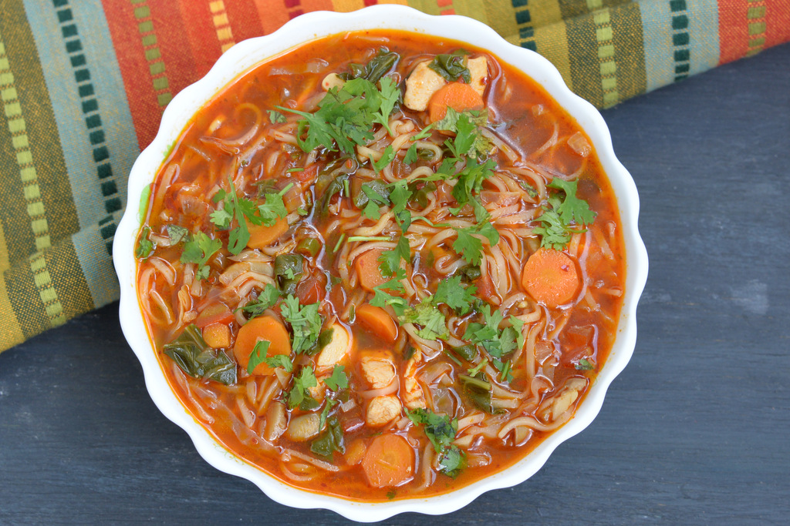
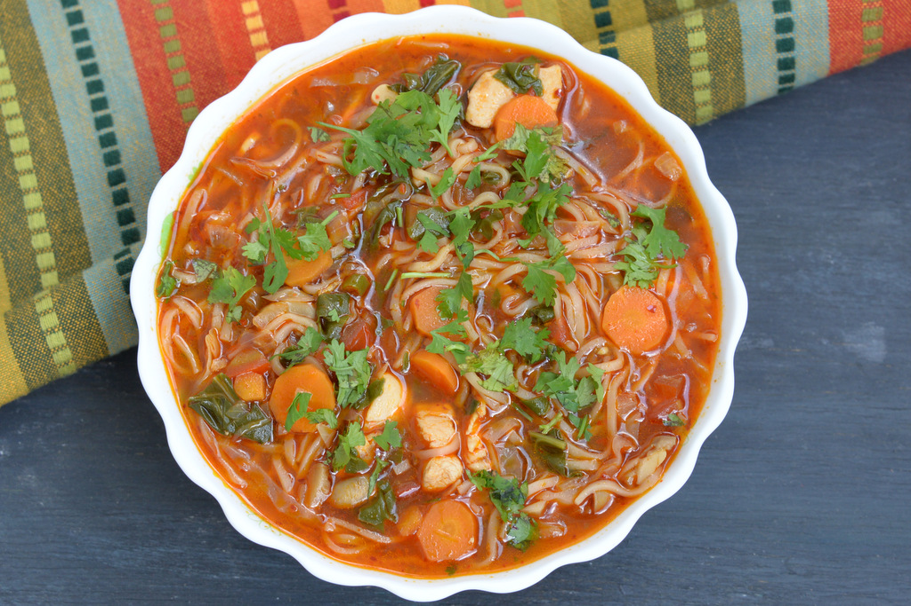

CHINESE FOOD
中国菜
China has a history of more than four thousand years, and the Chinese
people have established a colorful culture;
Chinese cuisine is an
indispensable part of it. Most foreign travelers to China are deeply
impressed by its food.
Here is a general introduction to Chinese
cuisine and cooking culture.
Chinese cuisine emphasizes the integrity of color, fragrance and
taste in its food. Chinese chefs try to make dishes
beautiful by
coordinating their colors. Some dishes are plain while others can
be very bright. A table of Chinese food looks
very colorful and
attractive.

Fragrance--the way Chinese food smells--is very important.
Chefs use the ingredients of a dish, as well as herbs, to make
food
smell good. But, taste is the most distinct characteristic
of Chinese food. Different methods are adopted to make Chinese
food
delicious, which gives the tongue a lot of satisfaction.
If you are a Chinese food lover, you'd know how amazing
delicacies are; and no we aren't talking about the authentic
Chinese food.
Here, we are referring to the Indianised version
of the Chinese cuisine. The addition of extravagant flavours
in schezwan rice,
noodles, vegetable and paneer make the Indo-
Chinese delicacies special. Interestingly, no Chinese person
would be able to identify
these dishes as their own, most of
which appear to be made from a mix of soya sauce, chili sauce
, tomato ketchup and schezwan
sauce. These dishes developed
right here in our country only to satisfy our palates that
love hot and spicy food. Authentic or
not, the food has
definitely grasped our taste buds and refuses to let go.
You can now spot tiny Chinese vans, cafes and even thelas
selling off those amazing hakka noodles and manchurians;
and we must say; they are to die for. There are numerous
vegetarian
Indo-Chinese recipes that have become quite
the superstars of the country.
HURRY UP! TRY THE RECIPIES AT YOUR HOME....
SOME OF THE OTHER CHINESE CUISINES ARE:
 
